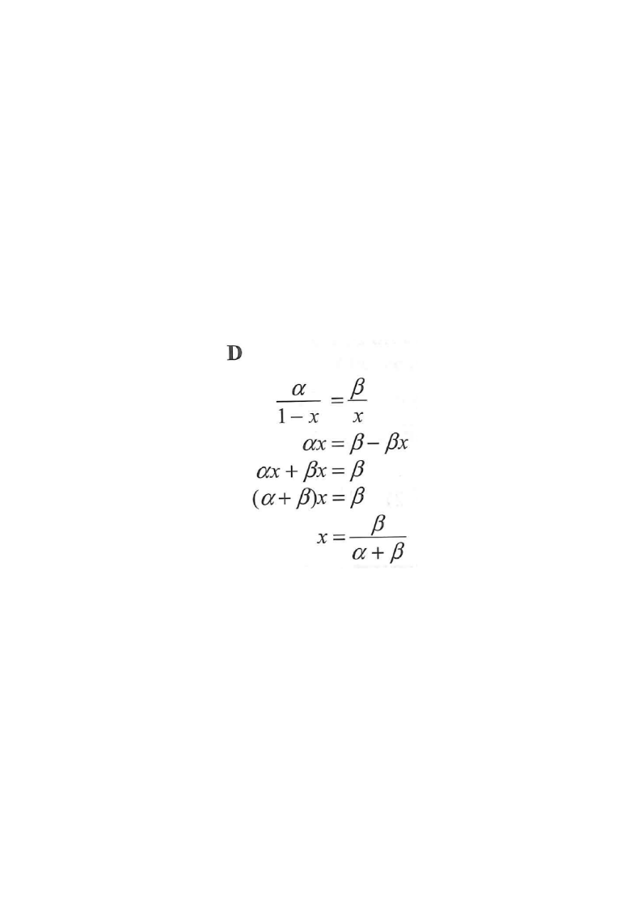

Start: the given equation with an unknown in a denominator.
α - termβ - termunknown x
HKDSE 2018 Paper 2 — Question 2
If $\dfrac{\alpha}{1-x}=\dfrac{\beta}{x}$, then $x=$
A. $\dfrac{\alpha}{\alpha-\beta}$B. $\dfrac{\alpha}{\alpha+\beta}$C. $\dfrac{\beta}{\alpha-\beta}$D. $\dfrac{\beta}{\alpha+\beta}$

Figure (original exam diagram)
Step 1Start from the given equation.
\[\frac{\alpha}{1-x}=\frac{\beta}{x}\]
Hint: x appears in a denominator, so cross-multiply first.
Step 2Cross-multiply.
Multiply both sides by $x(1-x)$:
\[\alpha x=\beta(1-x)\]
Hint: Cross-multiplication clears both denominators in one move.
Cross-Multiplication\(\dfrac{a}{b}=\dfrac{c}{d}\ \Rightarrow\ ad=bc\)Multiplying by \(x(1-x)\) clears the denominators \(1-x\) and \(x\), giving \(\alpha x=\beta(1-x)\).
Step 3Expand the bracket.
\[\alpha x=\beta-\beta x\]
Hint: Distribute $\beta$ over $(1-x)$.
Distributive Law\(\beta(1-x)=\beta-\beta x\)\(\beta\) multiplies both terms inside the bracket \((1-x)\).
Step 4Collect all x-terms on one side.
Add $\beta x$ to both sides:
\[\alpha x+\beta x=\beta\]
Hint: Goal — everything with x on the left, everything else on the right.
Step 5Factorise x out of the left side.
\[(\alpha+\beta)x=\beta\]
Hint: x is a common factor of $\alpha x$ and $\beta x$.
Common Factor Law\(\alpha x+\beta x=(\alpha+\beta)x\)Both terms on the left contain \(x\), so it is taken outside the bracket.
Step 6Divide both sides by $(\alpha+\beta)$.
\[x=\frac{\beta}{\alpha+\beta}\]
Hint: Divide — do not be tempted to "move" $\alpha+\beta$ across the equals sign.
Answer
$x=\dfrac{\beta}{\alpha+\beta}$ → Option D
PRACTICESimilar question — try it yourself
Question. Make \(x\) the subject of the formula \(\dfrac{p}{2-x}=\dfrac{q}{x}\).
Show the worked solution
Step 1. Cross-multiply by \(x(2-x)\): \(px=q(2-x)\).
Step 2. Expand: \(px=2q-qx\).
Step 3. Collect the \(x\)-terms: \(px+qx=2q\), i.e. \((p+q)x=2q\).
Step 4. Divide by \(p+q\): \(x=\dfrac{2q}{p+q}\). Check with \(p=3\), \(q=1\): \(x=0.5\), and both sides equal \(2\) ✓.